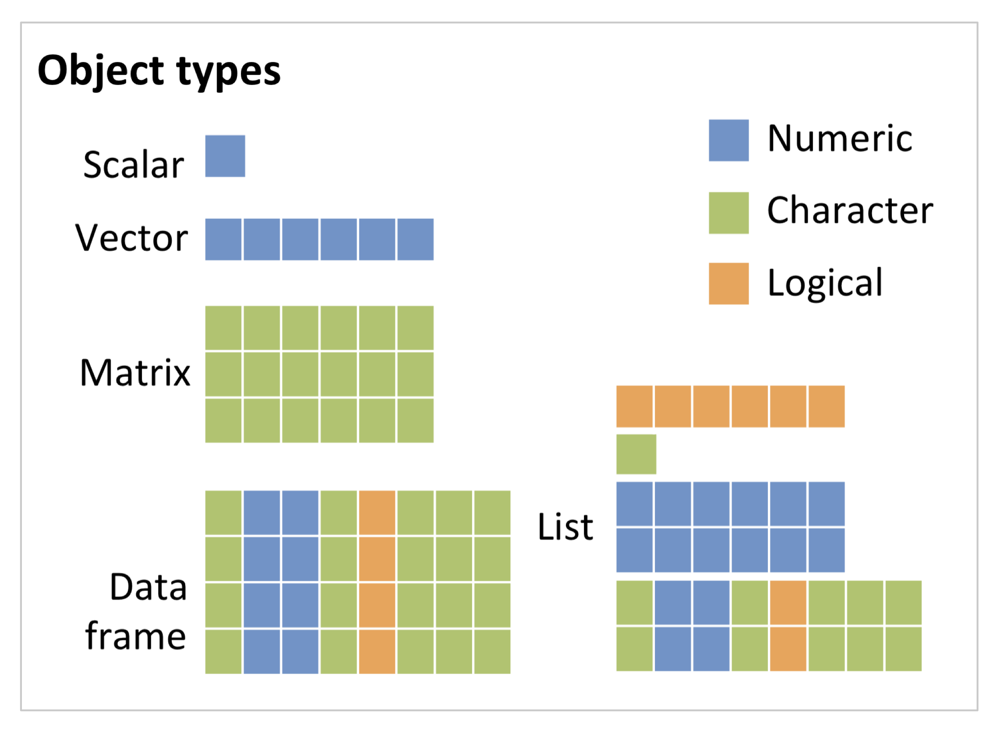
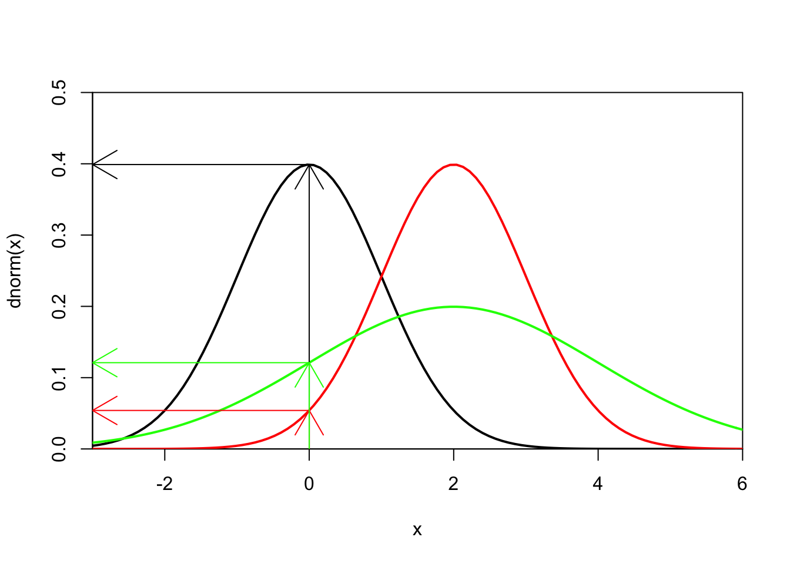
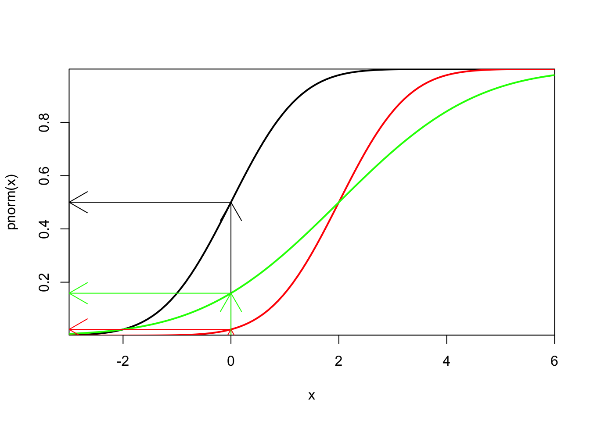
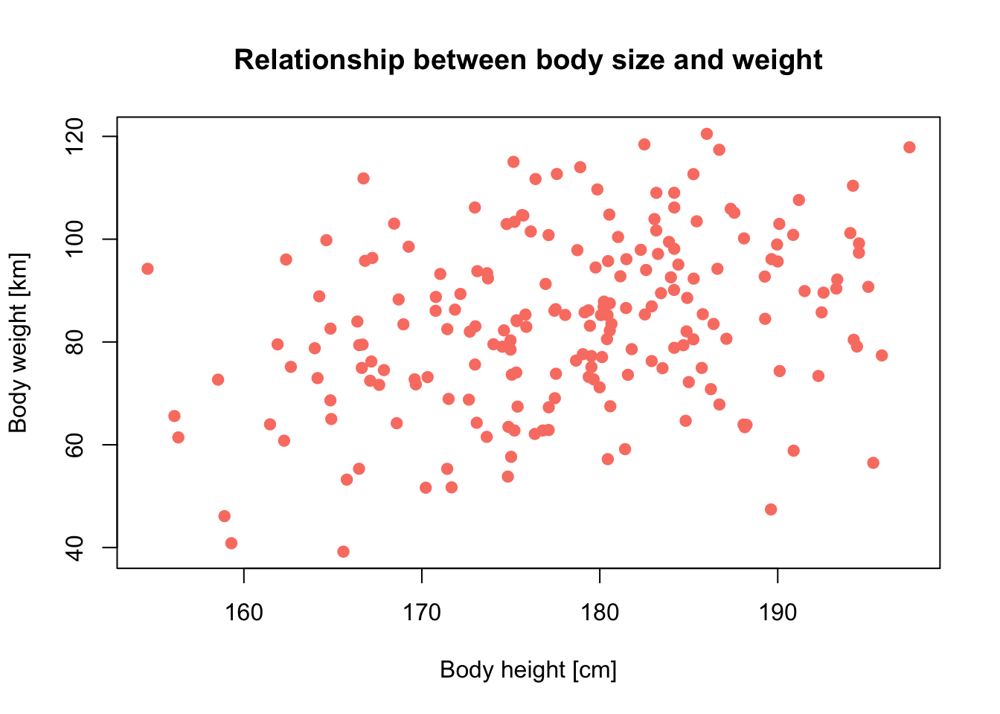
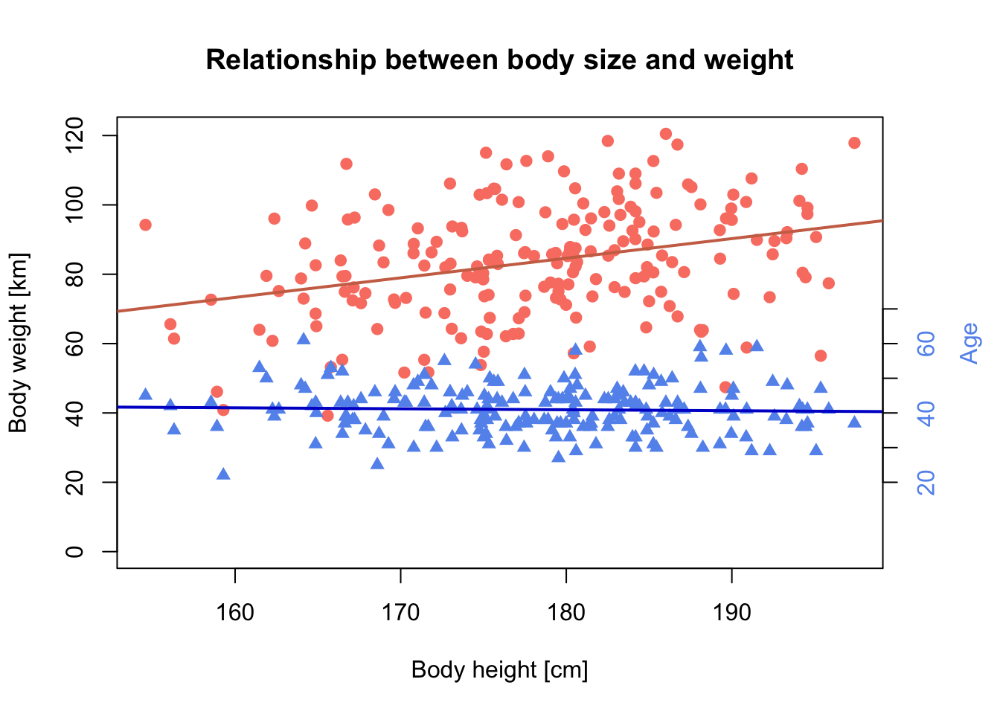
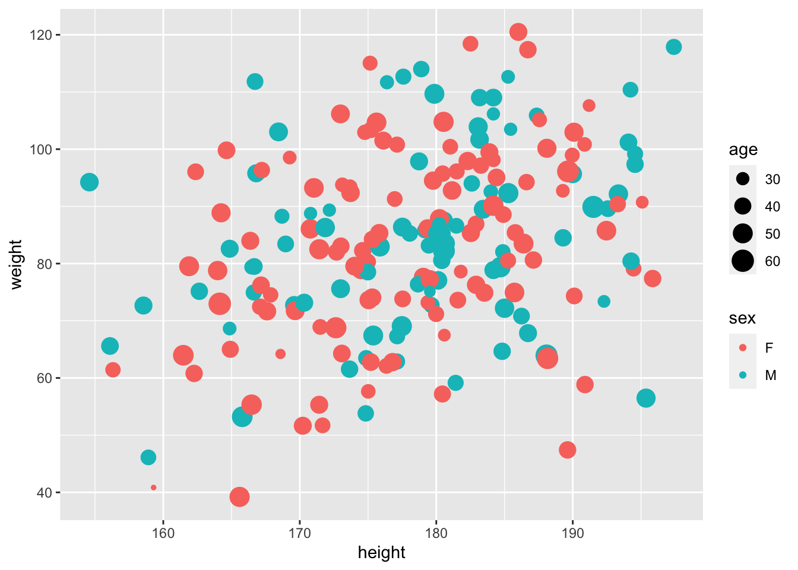
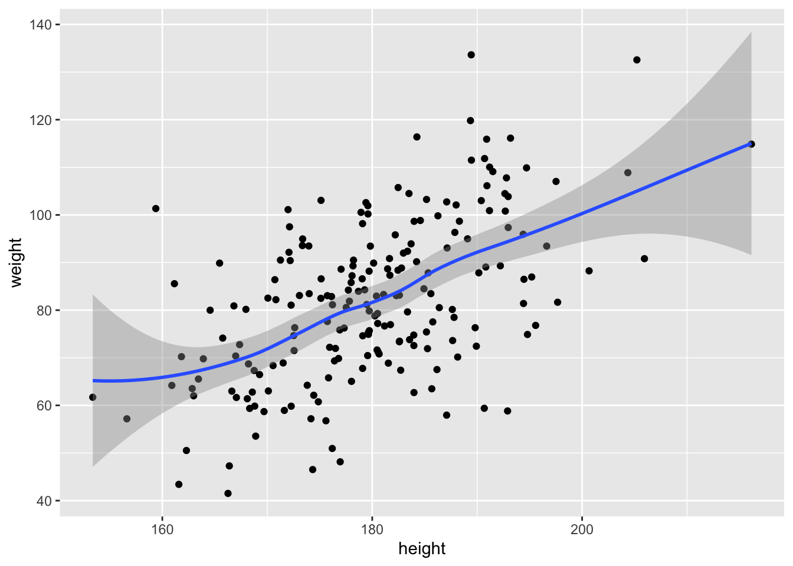

This tutorial provides a very brief recap of R basics. The materials are prerequisite for the remainder of the course. I highly recommend looking also at other tutorial, for example:
The RStudio cheat sheets are also very helpful!
What is R?
How to operate R:
I recommend using RStudio throughout the course. If you have not already done so, please visit the RStudio website (http://rstudio.org/) and download and install RStudio for your operating system.
I also recommend setting up an RStudio project for the entire course (UP students can watch video tutorial in Moodle) and within the RStudio project separate R scripts for each session. To do so:
# Session 1: R introduction and save the file in your folder “scripts” within your project folder, e.g. as “1_RIntro.R”In the R console you will find the symbol >:
>This is the so-called prompt, which asks you for the next command.
The most basic thing you can do now is typing some mathematical calculations. If you see a + instead, then the former command is not completed yet, and R waits for further arguments (maybe you have forgotten the closing bracket?).
20 * (5 - 3
)A line break or a semicolon (;) separates commands.
2 + 3; 2 + 4Anything following a hashmark #, will be interpreted as comment and will, thus, not be executed.
1 + 3
# 1 + 3You could type all code examples that are listed here, directly into your R console. You can access them by the cursor keys. However, I highly recommend storing everything into a script file.
R comes with a huge list of commands, which we call function. In order to execute a function, it needs to be followed by brackets ().
sum()## [1] 0sum(1,3)## [1] 4Within the brackets, we can provide additional arguments to the function. Some functions always expect additional arguments, and some functions don’t. In the above example, sum() also works without additional arguments. The function’s default assumes that we have provided a zero vector and thus the output is a 0. If we provide a vector of numeric values, the function will return the sum of these values.
Some functions have named arguments, for example the function rep(), which creates a vector of replicates.
rep(x=2,times=10)## [1] 2 2 2 2 2 2 2 2 2 2rep(2,10)## [1] 2 2 2 2 2 2 2 2 2 2In this example, both expression give the same results because we provided the arguments in the same order as the function expects. With named arguments, we can also change the order.
rep(times=10,x=2)## [1] 2 2 2 2 2 2 2 2 2 2rep(10,2)## [1] 10 10R is always pointed at a specific directory on your computer, the working directory. You can check the current working directory by typing:
getwd()If you set up the RStudio project correctly, then getwd() should show your course folder as working directory. Else, you change the working directory using setwd(). Check out the help page:
?setwdSee the files contained in your folder:
dir()You can list all objects in your workspace by typing ls().
ls()Probably your workspace does not list any objects yet. We can remove objects from the workspace using rm().
x <- 20
y <- 30
z <- 40
ls()
rm(x) # removes one or more objects
rm(list=ls()) #removes all objects from workspaceThere are thousands of additional packages available for R. You can see the list of installed packages by typing: library()
The same command is used for loading a specific package into the workspace = make it available for this session:
# loads the package raster:
library(ggplot2)
# removes package from current workspace:
detach(package:ggplot2)If you don’t have the packages above, install them in the package manager or by running the command
install.packages("ggplot2", dependencies=T)R comes with an extensive, built-in help system, and several manuals, help pages for every available function and many additional documents.
You can access the built-in manuals by typing:
help.start()Help pages for specific functions can be accessed with help() or with abbreviation ?.
# help page for arithmetic mean:
help(mean)
# the same:
?meanMost functions come with examples:
example(mean)Some function calls need to be surrounded by quotation marks when calling help, e.g. special characters or expression with syntactic meaning such as if, for und function.
?"*"
?"if"If you have forgotten the exact name of a function, you can search all function names, titles and keywords by typing:
help.search("mean")
# the same:
??meanSearch through all (installed) functions that contain the word in their function call:
apropos("mean")Look at all functions contained in any package by typing:
library (help = base)Some package authors offer additional documents or tutorials called vignettes:
# list all available vignettes of the installed(!) packages:
vignette()
# opens the vignette as pdf or html:
vignette("ggplot2-specs")Upon opening a new R session, some useful information will be printed to the console, mainly on version number and copyright. You can also extract this and other useful information by typing commands, e.g.
sessionInfo()
citation()The last command is important for citing the correct packages in your theses or any other publication.
You can use R as simple calculator. Simply type in the expressions; they will be executed immediately.
1+2*3
(1+2) * 3
2 * 5 - prod (2,5)
sqrt(25^2)
sin(pi/2)
0/0Check out ?Syntax to learn about the precedence of operators. If in doubt (or simply for better overview) use round brackets.
Useful arithmetic operators:
^ or **: power* / / : multiplication / division+ / - : addition / subtraction%/% / %% : integer division / moduloUseful mathematical functions:
max(), min(), range() : extreme valuesabs() : absolute valuessqrt() : square rootround(), floor(), ceiling() : roundsum(), prod() : sum, productlog(), log10(), log2() : logarithmexp() : exponential functionsin(), cos(), tan(), asin(), acos(), atan() : trigonometric functionsNumeric constants:
pi : the number \(\pi\)Inf, -Inf : infinityNaN : not defined (not a number)NA : Missing value (not available)NULL : empty valueIn principle, all data structures and functions are objects in R. You can get a list with all objects contained in the current workspace by typing:
ls()We can assign own objects using the assignment operator/arrow <-.
x <- seq(1,5)The results of any operation assigned to an object are usually not printed in the console. If you want to see the results in real time, simply enclose the entire command in brackets:
(x <- seq(1,5))## [1] 1 2 3 4 5R is case sensitive. X is not the same as x.
X=1
ls()Naming variables/objects:
There is no single naming convention in R. Even in the same package, multiple conventions might be used simultaneously. But usually, it’s advisable to stay consistent. Basically, thera are five naming conventions to chose from:
adjustcolorplot.newnumeric_versionaddTaskCallbackSignatureMethodDespite this freedom of choice, there are also some rules. Object names have to begin with a letter and may not contain any special characters except dots (.) and underscores (_). Also be careful not to use names of built-in functions and constants (nothing bad will happen, it may just create confusion), e.g. c(), t(), F, TRUE, pi. Reserved words can be found here:
?ReservedRelational and logical operators are mainly relevant for complex data requests or manipulations, and for programming, e.g. in control flows.
Relations:
?Comparison
4 < 3
(1 + 3)!=3Logical constants and operations:
?Logic
FALSE && TRUE
TRUE || FALSE
FALSE || FALSE
(3 < 2) && (4 == (2^2))Examples help understanding the difference between the operators && resp. || and & resp. |. The shorter form performs elementwise comparisons in much the same way as arithmetic operators. The longer form evaluates left to right examining only the first element of each vector. Evaluation proceeds only until the result is determined. The longer form is appropriate for programming control-flow and typically preferred in if-clauses.
c(TRUE,TRUE) # c() means 'concatenate' and combines arguments into a vector
c(TRUE,TRUE) & c(FALSE, TRUE)
c(TRUE,TRUE) & c(TRUE,FALSE)
c(TRUE,TRUE) && c(TRUE,FALSE) # only first elements compared
c(TRUE,TRUE) && c(FALSE,TRUE)Internally, TRUE is coded as 1 and FALSE as 0. Hence, you can also calculate with logical values. You will learn to appreciate it when doing data manipulations later on.
x <- c(3,5,1,-4,0,-2,4) # creates vector x
x < 0 # which element of x is smaller than 0?
sum(x < 0) # How many elements of x are smaller than 0?Relational operators:
==, != : equal, unequal>, >= : greater than, greater or equal<, <= : smaller than, smaller or equal! : negationR distinguishes five basic (atomic) data types:
Character:
(first_name <- "Damaris")Integer:
(shoe_size <- 41)Numeric:
(seminar_hours <- 1.5)Factor:
(lunch_today <- factor('mensa',levels=c('mensa','bakery','chinese')))Boolean:
(married <- TRUE)NA (Not Available) indicates missing values. For example, imagine a dataset with daily weather measurements over a longer period of time. On one day, the batteries of the weather station were empty and no measurements were taken. For integrity reasons, this empty day will still be stored in the data set but will be assigned the missing value ‘NA’. Knowing about NAs in your data is important because per default all functions will return NA if your data include NA.
mean(c(1,5,2,NA,10,4,NA,7))Fortunately, you can exclude NAs from most operations.
mean(c(1,5,2,NA,10,4,NA,7),na.rm=T)You can test for NAs with is.na()
is.na(c(1,5,2,NA,10,4,NA,7))R distinguishes several objects types that differ in complexity of data structure: scalars and vectors, matrices, arrays, data frame and list. Vectors, matrices and arrays can only contain a single data type. Data frames can contain different data types in separate columns but all columns need to have the same length. Lists can contain different object types and data types.

Vectors:
There are many different ways to generate vectors in R. We have already learned concatenating c().
Sequences:
1:5
5:1
seq(5,10,by=0.5) # create a sequence between 5 and 10 with an interval of 0.5
seq(5,10,length=21) # create a sequence between 5 and 10 with total length of 21
seq_len(5) # create a sequence of integers between 1 and 5Replicates:
rep(x=2,times=10)
rep(2,10)
rep(c(1,6,5),2) # replicate the vector (1,6,5) twice
rep(c(1,6,5),each=2) # replicate each element of the vector (1,6,5) twiceMatrices:
(x_mat <- matrix(data=1:4, nrow=2)) # create a matrix with the numbers (1,2,3,4) ordered in two rows. The function automatically fills up the columns first.
(x_mat <- matrix(1:4,2)) # same
x_mat[2,1]
matrix(1:4,2,byrow=T) # create a matrix with the numbers (1,2,3,4) ordered in two rows but fills up the rows first.Array:
(x_arr <- array(1:24,c(4,3,2)) # create a three-dimensional array with with four indices in first dimension, three indices in second dimension, and 2 indices in third dimension
)
x_arr[3,2,2]Data frame:
(veggy_shopping <- data.frame(grams=c(500,1000,1000,300,200),
veggy=c('salad','courgette','aubergine','onions','beetroot'),stringsAsFactors = F))
veggy_shopping[1,]In data frames (and lists) we can access columns using the $-operator.
veggy_shopping$veggyLists:
(shopping <- list(post = "stamps",
farmers_market = veggy_shopping,
bank = 60,
bakery = c('whole grain buns','rye bread')))
shopping[1]
shopping[[1]]
shopping['bakery']
shopping[['farmers_market']]$veggyEach element of an object type is internally assigned an index (positive integer ‘address’) and you can retrieve single elements or a subset of the object by addressing these indices. Square brackets are used for indexing.
x[3] # retrieve the 3rd element of vector x
x[3:4] # use can also address sequencesBasically, we distinguish four kinds of index vector: logical, positive integer, negative integer for excluding elements (inverse indexing), and character indices if we have named vectors.
(x2 <- c(x,NA))
x2[!is.na(x2)] # logical index vector
x2[c(1,3:4)] # index vector with positive integers
x2[-c(1,3:4)] # index vector with negative integers
(Fruits <- c(Orange=5, Banana=10, Apple=1, Pear=20))
(Grocery <- Fruits[c("Orange","Apple")]) # character indexYou can also modify single elements.
Fruits["Banana"] <- 0Use str() for displaying the object structure.
str(x_mat)
str(x_arr)
str(gcib_schedule)
str(gcib_course)The character vector ‘fun_factor’ in gcib_schedule was automatically converted to factors. This is ok here, but one may want to change this behaviour for other purposes. See the help page ?data.frame to find out how.
Control-flow constructs are among the most important building blocks in programming because they help structuring the workflow. We use loops for repeating workflows, and conditional expressions and switch statements for making choices between alternative control flows based on some conditions.
We use conditional expressions if specific computations and actions should only be performed under certain conditions. R knows three conditional expressions:
if(condition){command block}if(condition){command block} else{alternative command block}ifelse(condition, command block, alternative command block)These functions always require a Boolean condition, meaning that it needs to evaluate to TRUE or FALSE. Single commands do not need to be surrounded by curly brackets. Still, for beginners, they facilitate overview. Conditional expressions may be nested.
number <- 12
if (number < 12) {
print('This number is smaller than 12.')
} else
if (number==12) {
print('This number is equal to 12.')
} else {
print('This number is greater than 12.')
}## [1] "This number is equal to 12."The function ifelse() allows elementwise evaluation of the condition.
x <- 5
ifelse (x %in% c(5,6), TRUE, FALSE)ifelse() is most useful for evaluating elements of a vector according to a specific condition.
(x<-sample(1:20,30,replace=T))
ifelse(x<=10,0,1)You will often hear that loops should be avoided in R codes wherever possible as they tend to make your codes slower. Nevertheless, they are an important element in programming. We use them, for example, for iterating (parts of) code blocks with different parameters or initial values. R offers three different loop structures: repeat, while and for, where the latter is the most commonly used.
The for loop iterates through all elements of a provided vector: for (i in M) {command block}. See the help page ?"for".
x <- c(3,6,2,5,10)
for (i in x) {
print(i^2)
}R and the contributed packages contain a myriad of built-in functions. Still, it might be useful to write your own functions at some point. For example, you can combine a number of consecutive commands under one name/function. This facilitates recurring computations and improves clarity of your scripts.
Function definitions always start with function() followed by a command block in curly brackets {}. Obligatory and optional arguments are defined in the round brackets (). You can define arguments with and without default settings, and the argument list may also be emtpy.
# function without arguments:
greetings <- function(){
print('Hello world')
}
greetings()
# function with obligatory argument without default:
greetings <- function(name){
print(paste('Hello',name))
}
greetings('students')
#function with one obligatory argument and another argument with default
greetings <- function(name,greet='Hello'){
print(paste(greet,name))
}
greetings('students')
greetings('students','Wake up')R offers several options for accessing different data formats. Standard formats include text files (in ASCII format), binary files, R files (single objects or entire workspaces), and databases. These data can be read in from files using a file path, but also from the Internet using an URL path or from the clipboard. Of course, you can also write to these same devices. A good overview is provided in the manual „R Data Import/Export“ (R Development Core Team 20xx), which you can access by typing help.start(). The manual also contains information on some useful packages, e.g. foreign, which provides access to datasets created with different statistical software such as SAS, SPSS, S-PLUS etc. Data import using the package tidyverse is briefly explained in the RStudio cheat sheets.
All objects created in R can be exported to file. Data frame can be written to file by write.table and its variants:
write.table(veggy_shopping,"myData.txt", row.names=F, col.names=T, sep=',')
write.csv(veggy_shopping,"myData.csv")Important arguments: - file: (path) and file name - sep: column separator. Default: " " (white space or tab) - dec: character used for decimal points. Default: “.”
The function write() allows writing vectors and matrices to file. However, it contains some surprising default settings. Check out the help pages and below example. For demonstration purpose, we pipe the output into the console ("").
# Write vector:
write(x,"")
write(1:1000,file="myColumn.txt")
# Write matrix:
(Xmat <- matrix(1:10,ncol=5))
write(Xmat,"")Surprisingly, the matrix is not exported in the right structure. Check out the help page ?write to find out more about it.
# transpose matrix before exporting: works!
write(t(Xmat),"")List all files in your folder by typing:
list.files()
# alternative that also lists folders:
dir()The data file myData.txt is in table format (data frame); every column has a name, and columns are separated by comma. This information is important for correct reading:
my_df <- read.table('myData.txt')There may be several reasons for an error message. Is the data table correct? Do all columns contain the same number of elements? Yes, the data file is correct. Then, it probably has to do with the arguments passed to read.table(). Have a look at the help page and the default settings.
Important arguments: - file: (path) and file name - header: logical value indicating wether file contains column names; defaults to FALSE - sep: column separator. Default: " " (white space or tab) - dec: character used for decimal points. Default: “.” - colClasses: optional vector giving data types for each column - stringsAsFactors: set to FALSE to avoid automatic transformation of character to factor.
R expects white spaces as field separator but we had separated our data columns by comma when saving the file. Also, R does not assume column names. So, we have to tell R. correct reading:
(my_df <- read.table('myData.txt', sep=',', header=T))
str(my_df)
names(my_df)
summary(my_df)There are also some useful modifications for common formats, e.g. for comma-separated files (csv):
read.csv('myData.txt')
read.csv('myData.csv')Sometimes, using read.table() or its modifications is not meaningful. The next example file does not contain a data table but only a (very long) vector. read.table() will still work but it will be slow, and will create a data frame object with many rows in only one column, which is not very sensible.
read.table("myColumn.txt")For such one-row or one-column data files, it is better to use functions like scan(). With some exercise, this command can also be used for reading very complex data structures.
scan("myColumn.txt")Other packages are available that provide more convenient functions for data import, e.g. tidyverse or data.table. Often, these functions will automatically detect the data structure in the files.
library(tidyverse)
read_delim("myData.txt")
# so, read_delim does not detect the column separator
read_delim("myData.txt",delim=',')
read_csv("myData.txt")
library(data.table)
fread('myData.txt')A very useful option is to save R objects (save()) or the entire workspace (save.image()). With the latter, you can simply continue an R session at any later time. Saving single objects may be useful, for example, for saving statistical models that were estimated and analysed but that you want to keep for later references, for repeating some analyses etc.
# save object Xmat
save(Xmat,file="Xmat.Rdata")You can load R objects or workspaces using load().
Exercise:
Save the entire workspace as “Day1.RData” and quit R (e.g. by typing quit() or q()). Open a new R session and load workspace „Day1“. All data should be available again.
Statistics are at the heart of R and probably the reason why I learned this language in the first place. Here, I will just provide a brief overview of descriptive summary statistics, probability distributions, and random numbers. I don’t introduce simple linear regression here as we will do a lot of regression in the other weeks.
These describe data samples, for example the central tendency, spread and variance, or relationships in cases of bi- or multivariate data.
Important functions to know for first and second order moments are:
mean(x), weighted.mean(x), median(x) : arithmetic mean, weighted mean, and median of a vector (here: x)quantile(x, probs=p) : the p% quantile of vector xsd(x), var(x): standard deviation, and variance (both with denominator n-1)mad(x) : median absolute deviationrange(x) : minimum and maximum valuesdiff(range(x)) : spreaddiff(quantile(x,c(0.25,0.75))) : interquartile rangecor(x,y), cov(x,y) : correlation coefficient, and covarianceR offers several built-in probabability distributions, which usually come with four functions: probability density function (prefix d for density), cumulative distribution function (prefix p for probability), a function for calculating quantiles (prefix q for quantiles) and a function for generating (pseudo-) random numbers (prefix r for random).
Have a look at the help pages to find all the built-in distributions: ?Distributions
Let’s have a look at the normal distribution. As default, R assumes the standard normal distribution with mean=0 and sd=1. We first look at the probability density function.
x <- seq(-10,10,by=0.5)
curve(dnorm(x),-3,6,lwd=2,xaxs="i",yaxs="i",ylim=c(0,0.5)) #plots density function
curve(dnorm(x,mean=2),-3,6,col="red",add=T,lwd=2)
curve(dnorm(x,mean=2,sd=2),-3,6,col="green",add=T,lwd=2)
# What is the probability of a random variable x being 0?
dnorm(0)## [1] 0.3989423arrows(0,0,0,dnorm(0))
arrows(0,dnorm(0),-3,dnorm(0))
dnorm(0,2)## [1] 0.05399097arrows(0,0,0,dnorm(0,2),col="red")
arrows(0,dnorm(0,2),-3,dnorm(0,2),col="red")
dnorm(0,2,2) ## [1] 0.1209854arrows(0,0,0,dnorm(0,2,2),col="green")
arrows(0,dnorm(0,2,2),-3,dnorm(0,2,2),col="green")
The cumulative density function:
curve(pnorm(x),-3,6,lwd=2,xaxs="i",yaxs="i")
curve(pnorm(x,2),-3,6,col="red",lwd=2,add=T)
curve(pnorm(x,2,2),-3,6,col="green",lwd=2,add=T)
# What is the probability that a normally distributed random variable will be smaller than x?
pnorm(0)## [1] 0.5arrows(0,0,0,pnorm(0))
arrows(0,pnorm(0),-3,pnorm(0))
pnorm(0,2)## [1] 0.02275013arrows(0,0,0,pnorm(0,2),col="red")
arrows(0,pnorm(0,2),-3,pnorm(0,2),col="red")
pnorm(0,2,2) ## [1] 0.1586553arrows(0,0,0,pnorm(0,2,2),col="green")
arrows(0,pnorm(0,2,2),-3,pnorm(0,2,2),col="green")
The quantile function is the inverse of the cumulative distribution function. So, we ask the other way around: which value of the random variable x corresponds to probability p? For example, when we look at the 50% quantile (meaning the lower 50% of all possible values of the random variable x), what is the maximum value x may reach?
curve(pnorm(x),-3,6,lwd=2,xaxs="i",yaxs="i")
curve(pnorm(x,2),-3,6,col="red",lwd=2,add=T)
curve(pnorm(x,2,2),-3,6,col="green",lwd=2,add=T)
qnorm(0.5)
arrows(-3,0.5,qnorm(0.5),0.5)
arrows(qnorm(0.5),0.5,qnorm(0.5),0)
qnorm(0.5,2)
arrows(-3,0.5,qnorm(0.5,2),0.5,col="red")
arrows(qnorm(0.5,2),0.5,qnorm(0.5,2),0,col="red")
qnorm(0.5,2,2)
arrows(-3,0.5,qnorm(0.5,2,2),0.5,col="green")
arrows(qnorm(0.5,2,2),0.5,qnorm(0.5,2,2),0,col="green")Possibly the most important aspect of these probability distributions is that we can generate random numbers from them.
par(mfrow=c(3,1))
hist(rnorm(1000),xlim=c(-5,10),main="")
hist(rnorm(1000,2),xlim=c(-5,10),main="")
hist(rnorm(1000,2,2),xlim=c(-5,10),main="")Another very useful feature is that we can draw samples from a vector using sample(). As arguments, it takes a scalar or vector from which to draw, and the number of samples to draw. Per default, samples are drawn without replacement.
sample(1:30,size=20) # without replacement
sample(30,size=20) # same
sample(1:30,size=20,replace=T) # with replacement
sample(letters,10)For the sake of completeness, I mention statistical tests here although I cannot treat them in detail and this is not a stats class per se. For more information, have a look at introductory statistics books with R, e.g. Crawley (2007), and Dormann (2013) (in German but really good).
The Shapiro-Wilk-Test tests for normality of a sample:
shapiro.test(rnorm(100))
shapiro.test(rnorm(1000))
shapiro.test(rnorm(10))The \(p\)-value always refers to the probability of the null hypothesis (here, ‘the sample is normally distributed’). For a sufficiently small \(p\) (\(p < 0.05\) is wuite common), the null hypothesis gets rejected. xwIn above example, the data probably stem from a normal distribution (well, what a surprise given that we generated the data from a normal distribution). You should also see that the certainty of theses tests is strongly dependent on the sample size. Let’s compare to uniform random numbers:
shapiro.test(runif(100))If data are normally distributed, we can use the t-test to compare the mean of a sample to specified value/null hypothesis. Let’s generate a normally distributed random variable and compare this to the expected value of 0:
t.test(rnorm(100),mu=0)
t.test(rnorm(100,2),mu=0)If the data are not normally distributed, the Wilcoxon signed rank test wilcox.test() provides an alternative for the t-test.
If you have paired samples, use the option paired=TRUE in the t-Test and Wilcoxon-Test. Per default, both tests are implemented for unpaired samples.
t.test(rnorm(100),rnorm(80)) # not significantly different
t.test(rnorm(100),rnorm(80,2)) # significantly differentIf you want to test for equality of variances, use the F-Test:
var.test(rnorm(100),rnorm(100)) # not significantly different
var.test(rnorm(100),rnorm(100,sd=2)) # significantly differentOf course, there are many more tests available in R, for examples see library(help=stats).
R offers different options for inspecting, subsetting and manipulating data. We use the iris data that is contained in the R distribution
data(iris)
# Inspect the first five lines
head(iris)
# Inspect the last five lines
tail(iris)
# Check data structure:
str(iris)We have already seen how to subset columns by indexing:
iris[,c('Petal.Length')]
summary(iris[,c('Petal.Length')])Rows can also be extracted using indexing, or by using the function subset(). Here, we need the logical and relational operators mentioned earlier
# selecting rows using indexing
iris[iris$Species=='virginica',]
iris[iris$Species=='virginica' & iris$Sepal.Length > 6.5,]
# selecting rows using subset
subset(iris, Species=='virginica')
subset(iris, Species=='virginica' & Sepal.Length > 6.5)When processing data, it is often necessary to join/merge different data sets. As a simple example, we create two data frames, one with a price list for groceries and one with our shopping list.
prices_market <- data.frame(product=c('apples','tomatoes','blueberries','strawberries'), price_per_kg=c(2.5, 3.5, 5.20, 4.50))
shopping_list <- data.frame(product=c('apples','strawberries','bananas'), amount_in_kg=c(1.5,0.5,2))We now use the function merge() for joining the two data frames. Thereby, we have the option of ignoring non-matching entries or filling these up with NAs.
# The joined data frame contains only matching entries:
merge(prices_market, shopping_list, by='product')
# NAs will be added for the non-matching entries
merge(prices_market, shopping_list, by='product', all=T)applyIf you want to do complex operations on matrices, data frames or lists, apply() and its derivates are most often the tool of choice as they run a lot faster than loops. This is what is often termed vectorizing your code.
apply() allows row-wise and column-wise execution of functions over matrices, data.frames and arrays. Thereby, the argument MARGIN refers to the dimension you want the operation to run over (1 means row-wise, 2 column-wise). Also you have to provide an argument FUN that specifies which function you want to run over the array. In the following examples, we calculate the mean.
# Build a numeric matrix
(Xmat=matrix(1:12,nrow=4))
# Calculate the mean of all rows
apply(Xmat,1,mean)
# Calculate the mean of all columns
apply(Xmat,2,mean) You can also define own anonymous functions in the form FUN=function(x){...}.
(Xdf <- data.frame(x=rep(1,10), y=rep (3,10)))
apply(Xdf,1,FUN=function(x){sum(x)^2}) Also check out `lapply() and sapply() that are useful functions for operations over vectors or lists.
There are some convenient and fast implementations to form row and column sums and means for numeric matrices (or arrays) and data frames. They are equivalent to using the function mean or sum with apply() as above but probably easier to handle for you.
# Calculate the mean and sum of all rows
rowMeans(Xmat)
rowSums(Xmat)
# Calculate the mean and sum of all columns
colMeans(Xmat)
colSums(Xmat)R has many base functions for plotting graphics. So-called high-level graphic functions produce complete, independent graphics such as boxplots, histograms or scatterplots along with axes labels and titles. You can modify these according to your needs by optional arguments, e.g. labels, line widths, point symbols, colours.
Let’s first create some data for visualisation:
height <- rnorm(200,mean=180,sd=10)
pop <- data.frame(height=height, weight=-60+height*0.8+rnorm(200,sd=15),
age=rpois(200,42), sex=sample(c('F','M'),200,replace=T))Now, make very simple scatterplots
# explicitly provide x and y axis
plot(x=pop$height, y=pop$weight)
# formula method
plot(weight~height, data=pop)You can customize the plot with various options. See ?par for options.
plot(x=pop$height, y=pop$weight, pch=19, col='salmon',
xlab='Body height [cm]', ylab='Body weight [km]',
main='Relationship between body size and weight')
You can change the plot type using the type argument.
plot(pop$height, type='l')Histograms and boxplots:
# open a new graphic device
# under Windows OS it should be "windows()", under linux "x11()"
quartz(w=6,h=6)
hist(pop$height)
boxplot(pop$height~pop$sex)So-called low-level graphic functions let you add certain elements to existing plots, e.g. lines, labels, legends etc. Also, you can make mathematical annotations (?plotmath).
# Set the plot margin size; see "?par"
par(mar=c(5,4,4,4)+0.1)
plot(x=pop$height, y=pop$weight, pch=19, col='salmon',
xlab='Body height [cm]', ylab='Body weight [km]',
main='Relationship between body size and weight',
ylim=c(0,max(pop$weight)))
# add regression line
abline(lm(pop$weight ~pop$height), col='salmon3', lwd=2)
# add points
points(x=pop$height, y=pop$age, pch=17, col='CornFlowerBlue')
abline(lm(pop$age ~pop$height), col='blue3', lwd=2)
# add axis for age
axis(4,at=pretty(range(pop$age)),col.axis='CornFlowerBlue')
# add axis label
mtext('Age',side=4,col='CornFlowerBlue', line=2.5)
ggplot2ggplot2 is a visualisation library that allows more elegant and versatile plotting. It follows quite a different philosophy than base graphics. Plots are built step by step. This basic template can be used for different types of plots:
ggplot(data = <DATA>, mapping = aes(<MAPPINGS>)) + <GEOM_FUNCTION>()
library(ggplot2)The ggplot() function binds the plot to a specific data frame using the data argument.
ggplot(data = pop) # this provides a blank ggplot objectUsing the aesthetic function aes() we can define the geometric and statistical objects (color, size, shape, and position).
p <- ggplot(data = pop, mapping = aes(x = height, y = weight))Using the geom_ functions, we can add the geometric shapes representing the data, e.g.: - geom_point() for scatter plots, dot plots, etc. - geom_boxplot() for boxplots - geom_line() for trend lines, time series, etc.
p + geom_point()
# you can also do it in one go
ggplot(data = pop, mapping = aes(x = height, y = weight)) + geom_point()We can modify this plot by adding colours, transparency etc.
p + geom_point(color='salmon')
# add transparency:
p + geom_point(color='salmon', alpha=0.5)
# assign different colours to females and males:
p + geom_point(aes(color=sex))
# assign different symbols to age classes:
p + geom_point(aes(color=sex, shape=factor(round(age/10)*10)))# assign different point sizes to age:
p + geom_point(aes(color=sex, size=age))
Add a linear model or Loess smoother:
# regression line:
p + geom_point() + geom_smooth(method="lm")# smoother:
p + geom_point() + geom_smooth(method="loess")## `geom_smooth()` using formula 'y ~ x'
Boxplot:
ggplot(data = pop, mapping = aes(x = sex, y = weight)) +
geom_boxplot()Crawley, Michael J. 2007. The R Book. UK: John Wiley & Sons.
Dormann, Carsten F. 2013. Parametrische Statistik. Springer.